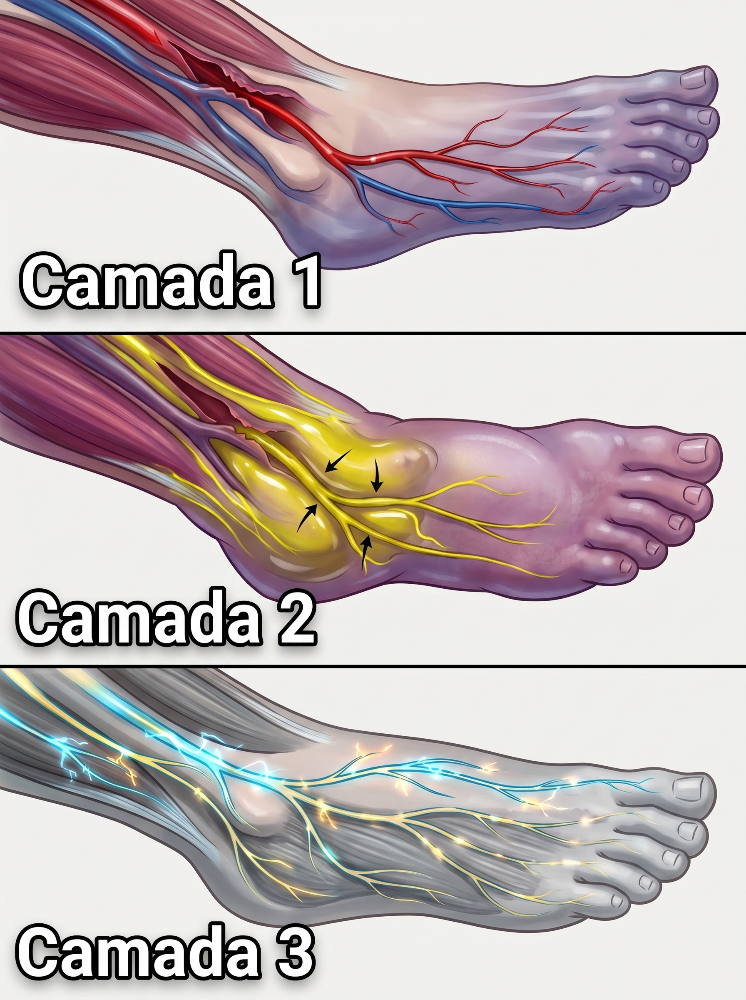
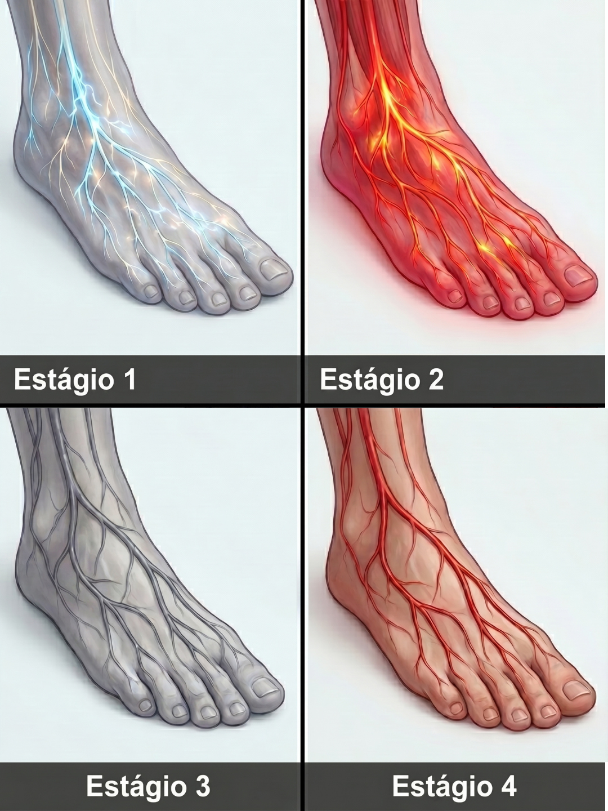
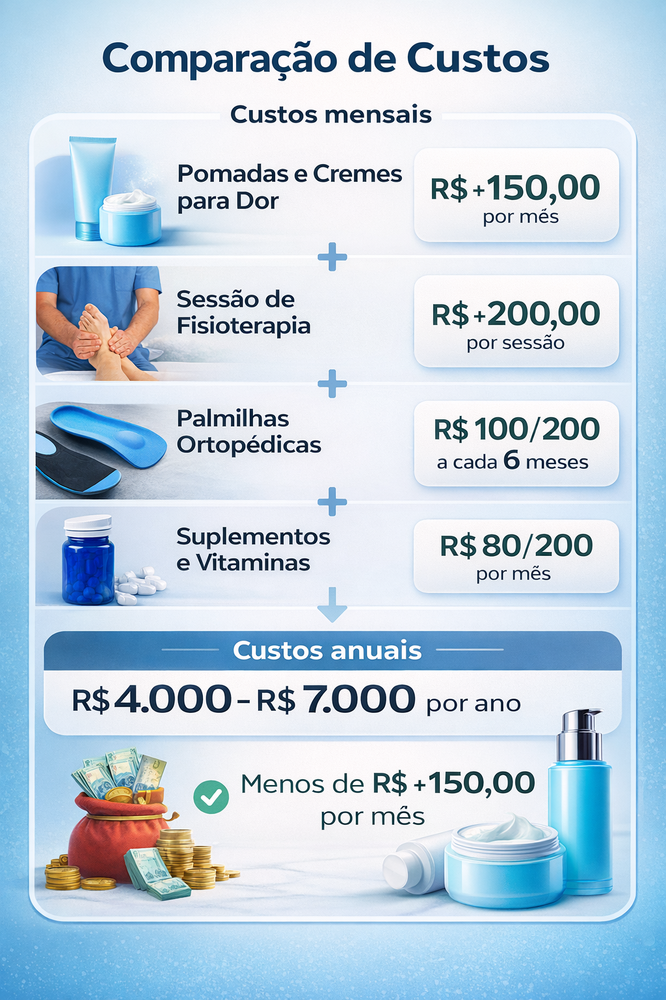
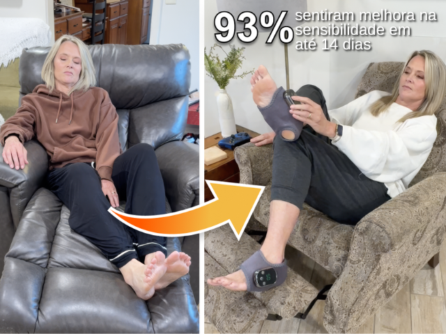

ESTOQUE: CRÍTICO

MENOR PREÇO DESDE O LANÇAMENTO
Seus pés queimam, formigam ou ficam dormentes? Seus nervos estão pedindo socorro — e cada dia sem o tratamento certo os aproxima do ponto sem volta

Uma nova abordagem clínica está mudando o que sabemos sobre neuropatia periférica — e expondo por que tudo que você tentou até agora provavelmente tratou o sintoma enquanto o problema continuava crescendo por baixo.
Você sabe exatamente como é.
O despertador toca. Você se levanta. E antes mesmo de chegar ao banheiro, os pés já avisam que hoje vai ser mais um dia difícil — aquela queimação que parece brasa, o formigamento que não para, ou pior: o silêncio completo, aquela dormência de quem perdeu o contato com o próprio chão.
Você vai ao mercado e já calcula cada passo. Cancela passeios com os netos porque ficar de pé por meia hora é exaustivo. Dorme mal porque a posição errada acende a queimação de novo às 3 da manhã.
E no fundo, com o tempo, vai aceitando: "É a idade. É o jeito."
Não é.
O que está acontecendo nos seus pés tem nome, tem causa e — isso é o que a maioria dos médicos não explica com clareza — tem como ser revertido, desde que você pare de cometer os erros que vou descrever agora.
Erro #1: você está tratando a dor como se ela fosse o problema
A dor não é o problema. É o alarme. Silenciá-la sem desligar o fogo é o motivo pelo qual nada funciona por mais de algumas horas.Pomada de arnica. Banho de sal grosso. Meia compressiva. Dipirona à noite quando fica insuportável.
Tudo isso faz uma coisa só: silencia o alarme sem desligar o fogo.
A queimação e o formigamento que você sente não são disparos elétricos aleatórios dos nervos. São mensagens. Seus nervos periféricos — os que chegam até seus pés — estão sendo privados de oxigênio e nutrientes porque o fluxo de sangue nessa região caiu drasticamente. Eles estão, literalmente, sufocando devagar.
A dor é o grito deles pedindo socorro.
Quando você aplica uma pomada ou toma um anti-inflamatório, você não resolve o sufocamento — você tampona o microfone. O grito some por algumas horas. Mas o fogo continua.

Uma revisão publicada em 2024 no Journal of Clinical Neurology acompanhou pacientes por 12 meses e encontrou algo perturbador: mesmo aqueles que relataram melhora temporária da dor com tratamentos convencionais continuaram apresentando deterioração nervosa progressiva. A disfunção circulatória por baixo nunca foi tratada.
Traduzindo: a dor melhorar não significa que o problema melhorou. Às vezes significa que o nervo ficou danificado demais para continuar gritando.
Erro #2: acreditar que depois dos 40 o dano nervoso é irreversível
Essa crença está roubando anos de mobilidade que você não precisava perder. Nervo danificado por falta de circulação não é o mesmo que nervo morto."Isso é da idade, doutor." Quantas vezes você já ouviu essa frase? Ou foi você mesmo que disse?
É o erro mais caro que existe. E não é verdade.
Sim, com o envelhecimento a circulação periférica cai. Aos 50 anos, o fluxo sanguíneo nos pés pode estar até 40% abaixo do ideal. Aos 65, metade das pessoas já perdeu mais da metade da circulação que tinham aos 30.
Mas atenção: nervo danificado por falta de circulação não é o mesmo que nervo morto.
Pesquisas do Departamento de Neurologia da Mayo Clinic confirmam que nervos periféricos mantêm capacidade regenerativa até os 70 e 80 anos, desde que o suprimento de sangue seja restaurado a tempo. O problema não é a idade. É a privação circulatória que ninguém tratou.
Quem aceitou a dormência como destino não está envelhecendo. Está sofrendo de uma condição tratável que ninguém lhe disse que podia ser revertida.
E enquanto aceita, o nervo continua se deteriorando, chegando cada vez mais perto do estágio em que a recuperação deixa de ser possível.
Erro #3: tratar uma camada do problema de cada vez
A neuropatia periférica envolve três falhas simultâneas. Qualquer abordagem que trate só uma delas vai frustrar você, como tem frustrado até agora.Fisioterapia às terças e quintas. Bolsa de água quente antes de dormir. Meia compressiva de manhã.
Cada coisa dessas toca uma parte do problema. E cada uma, sozinha, dá um alívio que dura horas. Nunca semanas.
Por quê? Porque a neuropatia periférica não é uma falha. São três falhas acontecendo ao mesmo tempo:
Camada 1 — Vasos contraídos: o sangue fresco não chega. Os nervos ficam sem oxigênio e sem os nutrientes que precisam para se regenerar.
Camada 2 — Fluido estagnado e inchaço: o pouco de circulação que ainda existe fica represado. O tecido inflama. A pressão piora o dano.
Camada 3 — Tecido nervoso adormecido: os nervos param de enviar e receber sinais corretamente. É quando vem a dormência — o silêncio mais perigoso.
Para recuperar a sensação de forma real e duradoura, você precisa agir nas três camadas ao mesmo tempo. Não em sequência. Não uma por semana. Simultaneamente, em cada sessão.

É por isso que a bolsa de água quente alivia por 20 minutos e some — ela abre os vasos (Camada 1) mas não move o fluido estagnado nem estimula o tecido nervoso. O problema fica intacto nas outras duas camadas e volta com força total.
O protocolo que está funcionando em contexto clínico se chama estimulação simultânea multimodal: calor infravermelho profundo, massagem pulsada de tecidos e compressão graduada inteligente. Os três ao mesmo tempo, em uma sessão de 15 minutos.
Esse é o único tipo de abordagem capaz de agir nas três camadas de uma vez. Qualquer coisa que trate só uma delas vai frustrar você — assim como tem frustrado até agora.
Erro #4: esperar piorar para agir
A janela de recuperação existe e está diminuindo. O formigamento de hoje pode ser a última oportunidade antes da dormência permanente."Quando ficar insuportável, eu trato." Essa frase adiou a recuperação de muita gente. De meses para anos.
O formigamento que você sente hoje são nervos que ainda têm circulação suficiente para enviar sinais. Sinal ruim, mas sinal. Isso significa que ainda há tecido vivo o suficiente para se recuperar.
A dormência que vai e volta? É a circulação caindo abaixo do mínimo que os nervos precisam para funcionar. Eles estão começando a se desligar.
Quando a dormência se torna permanente — o silêncio total nos pés — os nervos já estão em um estágio de dano que exige muito mais tempo e muito mais esforço para reverter. Alguns não revertem.
Estágio 1 — Formigamento intermitente: os nervos ainda gritam. Janela de recuperação: ampla.
Estágio 2 — Queimação persistente: a bainha do nervo começa a se degradar. Janela de recuperação: boa, mas se estreitando.
Estágio 3 — Dormência progressiva: a função nervosa começa a se apagar. Janela: reduzida.
Estágio 4 — Perda de equilíbrio e mobilidade: dano estrutural. A janela está quase fechada.
Dados da Cleveland Clinic mostram que pacientes que iniciaram tratamento focado na circulação no Estágio 1 ou 2 tiveram resultados significativamente superiores em sensação, mobilidade e qualidade de vida, comparados aos que esperaram chegar ao Estágio 3 ou 4.

Cada semana que passa no Estágio 1 sem intervenção circulatória real é uma semana que você se aproxima do Estágio 3, onde as conversas mudam de "recuperação" para "gerenciamento".
Erro #5: gastar dinheiro todo mês em soluções que não foram feitas para isso
R$ 80 na pomada, R$ 400 na fisioterapia, R$ 150 no suplemento. Não é falta de esforço. É que ninguém lhe mostrou que existia uma alternativa diferente.R$ 80 na pomada. R$ 400 por sessão de fisioterapia. R$ 250 nas palmilhas ortopédicas. R$ 150/mês nos suplementos que o influenciador recomendou.
É fácil chegar a R$ 10.000 ou mais por ano rodando em círculos entre remédios de uma camada só — cada um aliviando o sintoma do dia sem tocar nas três falhas circulatórias que estão destruindo seus nervos.
Não porque você está fazendo escolhas erradas. Mas porque ninguém lhe mostrou que existia uma alternativa diferente.

A abordagem que fisioterapeutas especializados em neuroreabilitação estão recomendando agora é radicalmente diferente de tudo isso.
É um dispositivo de grau clínico que você usa em casa. 15 minutos por dia, sentado no sofá. Ele entrega as três camadas terapêuticas ao mesmo tempo: calor infravermelho profundo que dilata os vasos, massagem pulsada que move o fluido estagnado e compressão adaptativa que reativa o tecido nervoso.
Sem mensalidade. Sem fila de espera. Sem consultas extras.
Chama-se Massageador Neuro Sense. Foi desenvolvido com base no protocolo de estimulação simultânea multimodal utilizado em clínicas de neuroreabilitação, adaptado para que qualquer pessoa possa aplicar com segurança, todos os dias, em casa.
O que quem já usa o Neuro Sense está relatando

⭐⭐⭐⭐⭐
Maria Conceição, 63 anos, São Paulo — neuropatia diabética há 5 anos
"Usei fisioterapia por dois anos, gastei mais de R$ 8 mil e continuava igual. Na terceira semana com o Neuro Sense, acordei de manhã, pisei no chão e senti o frio do piso — pela primeira vez em quase três anos. Liguei chorando para minha filha."

⭐⭐⭐⭐⭐
Roberto Alves, 58 anos, Curitiba — já tentou de tudo
"Já tinha tentado gabapentina, acupuntura, vitaminas B12, palmilha ortopédica. Cada coisa aliviava por alguns dias e voltava. O Neuro Sense foi a primeira coisa que fui sentindo diferença semana a semana, não hora a hora. Hoje consigo ir ao supermercado sem sentir os pés pegando fogo na hora de voltar."

⭐⭐⭐⭐⭐
Margarida Teixeira, 55 anos, Belo Horizonte — perdeu a vida social
"Tinha largado a caminhada matinal, parado de ir à missa, não conseguia mais passear com os netos no parque. Ficava inventando desculpa porque tinha vergonha de dizer que os pés não deixavam. Depois de seis semanas com o Neuro Sense, fiz 4 km de caminhada no domingo. Meu marido não acreditava que era eu."

⭐⭐⭐⭐⭐
Dr. Carlos Menezes, Fisioterapeuta Especialista em Neurologia
"A evidência clínica para estimulação simultânea multimodal é sólida. Quando você combina vasodilatação térmica, mobilização circulatória pulsada e compressão graduada em uma única sessão, você ataca os três mecanismos principais da insuficiência circulatória periférica de uma vez. É a diferença entre tratar o sintoma e tratar o processo."
Dois caminhos à sua frente
Você chegou ao fim desta leitura sabendo o que a maioria não sabe. O que faz agora depende só de você.Você entendeu os 5 erros. Sabe por que a bolsa de água quente não dura. Sabe por que a fisioterapia alivia mas não resolve. Sabe que a janela de recuperação existe e que está diminuindo.
Caminho 1: Fechar essa página. Continuar com a pomada de arnica, a meia compressiva e a esperança de que "vai melhorar sozinho". Gastar mais R$ 800 por mês tratando sintomas. Chegar ao Estágio 3 ou 4 sem ter tentado o único protocolo que age nas três camadas ao mesmo tempo.
Caminho 2: Testar o Neuro Sense por 60 dias sem risco. Quinze minutos por dia no seu sofá. As três camadas trabalhando juntas. Se em 60 dias você não sentir nenhuma diferença, devolvemos cada centavo. Sem pergunta, sem burocracia.
O Massageador Neuro Sense vem com garantia total de 60 dias. Você testa. Se não funcionar, não pagou nada.
Mais de 47.000 pessoas já pararam de gerenciar sintomas e começaram a tratar a causa.

Veja Como Pedir o Seu:
- Clique no botão abaixo para acessar a página de compra segura.
- Escolha a quantidade — a maioria das pessoas pega 2, um para casa e um para levar.
- Finalize enquanto ainda há estoque disponível.
Seus Pés Já Esperaram Tempo Demais
Cada dia sem o protocolo certo é um dia a mais de deterioração silenciosa.
Os nervos não se regeneram sozinhos enquanto a circulação continua ruim. Mas quando você devolve o fluxo sanguíneo certo com as três camadas trabalhando ao mesmo tempo, o corpo faz o resto.
Com o Neuro Sense, você dá ao seu sistema nervoso a chance real de se recuperar — sem sair de casa, sem gastar fortunas todo mês, sem depender de agenda de clínica.*
Imagina acordar amanhã e pisar no chão sem o alarme de sempre.
É para isso que serve esse passo.

Garantia incondicional de 60 dias. Temos tanta confiança no Neuro Sense que você tem 60 dias para testar em casa. Sentiu diferença ou devolvemos tudo, sem perguntas.
👉 Clique abaixo e garanta seu Neuro Sense com 60% de Desconto — enquanto o estoque durar

Pare de Tratar Sintomas — Experimente o Neuro Sense Sem Risco por 60 Dias (60% Off)
🚨 Risco de esgotamento: Alto 🚨


Referências Científicas:
Mayo Clinic — Regeneração de Nervos Periféricos | Cleveland Clinic — Intervenção Precoce na Neuropatia Periférica | Journal of Clinical Neurology — Disfunção Circulatória (2024) | Piedmont Healthcare — Termoterapia e Circulação | Sword Health — Resultados de Estimulação Multimodal
Avaliações de Clientes